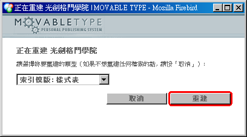

Movable Type 完全手冊：第四章 ─ 套用樣式表
« 目錄
第四章 ─ 套用樣式表
經過了前面幾個漫長的章節，相信妳已經學到了新增、刪除等各種管理文章的技巧了。比較活躍的使用者甚至可能早已展開了自己的網誌之路，在廣大的資訊海洋中，發表著一篇又一篇的優美篇章。
很快地，妳也會開始不滿於站台看起來的樣子 ─ 妳已經能夠掌握裡面的文字，卻還不曉得要如何改變它們看起來的樣子；白底灰字雖然乾淨簡單，但是或許就是跟妳的風格不同。妳想要更炫麗的效果、更強烈的配色、更可愛的圖案或更柔情的風采。要自己創造出完全符合自己需求的版面需要相當多的知識，然而如果退而求其次，祇先要能換個風格的話，事情卻簡單得多。
由於 Movable Type 把頁面的版面風格通通交給一個樣式表模版來負責，所以妳祇需要替換這個檔案的內容、套用別人準備好的樣式表，就能夠讓妳的站台版面看起來迥然不同。本章的目的就是讓妳能在十分鐘之內，把整個站台給改頭換面。
甚麼是樣式表
Movable Type 用了一系列的「模版 (template) 」，來決定妳的站台頁面裡，要出現些甚麼內容、以及它們要如何呈現；其中多數的模版決定的是頁面的架構 ─ 要有哪些東西、甚麼東西要先出現，不過頁面的實際樣式則完全仰賴一個叫「樣式表 (Stylesheet) 」的模版來決定。在這個樣式表裡，會定義著頁面裡各個元件的顏色、底色、留白、間隔、邊框、尺寸、高度等屬性，甚至會定義著特定元件的位置 ─ 因此元件的視覺效果將不會囿於結構上的先後順序，同時妳就祇需要修改一個檔案，就能夠讓所有的頁面同時改頭換面。
這就是樣式表的功能，也是它的優點。在網頁的世界裡，樣式表的規格是由全球資訊網協會 (W3C) 所制訂的階層樣規 (CSS) 標準；本書撰寫之時， CSS2 已被廣泛地支援，而 CSS3 則還在草稿階段。不過各家瀏覽器實際上對 CSS2 的支援程度卻各有不同，其中又以微軟的 Internet Explorer 問題最多。我們在此並不打算深入探討這些細節的技術問題，妳祇需要記得無論做了甚麼修改，最好先拿各種不同的瀏覽器看一下，至少確保不會有很糟的結果出現。
套用 Movable Type 提供的樣式表
要自己憑空撰寫出一整份樣式表，對於新手來說根本是天方夜譚。所幸網路上有許多地方，都能夠找到別人預先撰寫好的、適用於 Movable Type 的樣式表；於是妳一開始就祇需要會複製跟貼上，便能讓頁面看起來迥然不同。事實上， MovableType 的官方網頁 http://www.movabletype.org 上就提供了七組不同的樣式表，讓妳能夠直接套用。現在就讓我們來看看該怎麼做：
- 首先請如圖一先連到 MovableType 的官方網頁 http://www.movabletype.org ，在左方的資源 (Resource) 區裡，有一個叫 Default Styles 的鏈結，請點擊這個鏈結。
圖一：從 MovableType 的官方網頁，按下連往預設樣式表的鏈結。
- 妳會看到在圖二的畫面裡，有七個樣式表的鏈結，分別有著不同的名字；其中
Clean 其實就是妳目前在用的白底灰字（如果妳還沒有改過的話）。每一個樣式表，都會像圖三那樣，有一個 [SCREENSHOT] 的鏈結，按下後會跳出如圖四的視窗，讓妳預先看一下這個樣式表套用之後，頁面會變成的樣子。圖二：有七個預設的樣式表，分別叫 Clean 、 Trendy 、 Georgia Blue 、 Gettysburg 、 Rusty 、 Plain Jane 、 Stormy 。
圖三：這七個樣式表都付了一個 [SCREENSHOT] 的鏈結；這個範例裡的是 Stormy 樣式表旁的畫面。
圖四：這個彈出的視窗裡，是 Stormy 樣式表套用後的樣子。
- 一旦妳挑好要套用的樣式表後，可以如圖五用滑鼠在該樣式表的內容處按下右鍵，然後選
全選（當然妳也可以按 Ctrl-A ），再如圖六按下滑鼠右鍵選複製（當然妳也可以按 Ctrl-C ）。圖五：把欲套用的樣式表給整個選取下來；在這個範例中我們所選取的是 Stormy 樣式表。
圖六：把欲套用的樣式表給整個複製起來；在這個範例中我們所複製的是 Stormy 樣式表的內容。
- 接下來讓我們回到網誌管理介面。登入後請如圖七按下左方工具列的「模版」按鈕。
圖七：登入網誌管理介面後，按下左方工具列上的「模版」按鈕。
- 接下來的畫面裡會列出目前正在使用中的模版；請如圖八按下「樣式表」模版的鏈結。
圖八：從模版清單裡按下「樣式表」模版的鏈結，加以編輯。
- 在這個模版編輯畫面裡，請如圖九在模版本體的欄位裡按滑鼠右鍵，然後選「
全選」（當然妳也可以按 Ctrl-A ），接著再如圖十按滑鼠右鍵並選「貼上」（當然妳也可以按 Ctrl-V ）；這麼一來，就會把整個樣式表給代換成新的了。圖十：把妳早先複製起來的樣式表貼上，代換掉妳原先所使用的。
- 如圖十一按下「
儲存」按鈕來儲存這次的變更。
- 光是把樣式表模版給存檔，並不能實際更新妳的頁面上的視覺效果；請在儲存後如圖十二把畫面往下捲動，並且按下「
重建」按鈕。
- 現在會彈出另外一個小視窗，通知妳說目前要重建的是「
索引模版：樣式表」，請如圖十三按下「重建」按鈕。
圖十三：按下彈出視窗上的「重建」按鈕，來重建樣式表。
- 一旦樣式表重建好後，妳就會看到如圖十四的畫面，這時請依圖按下「
關閉」按鈕來把這個視窗關閉。
- 這樣就完成了！檢視網站的時候妳就會看到整個版面已經煥然一新了！

圖十五：妳的網誌頁面樣式已經變了；在這個範例中變成了 Stormy 樣式。
修補 Movable Type 提供的預設樣式表
很不幸地，雖然歷經了多次改版，但是 Movable Type 所提供的預設樣式表卻還是有些瑕疵；這些瑕疵雖然不影響實際的操作，但是對於講究細節的使用者來說，可能就不能接受因此產生的版面瑕疵了。如果妳不在乎這一點的話，大可跳過這個段落；不過若妳願意的話，也可以按照以下的說明（這很簡單的，真的！）試著自己修正這些預設樣式表裡的瑕疵：
- 除了
Clean 樣式表外，所有的預設樣式表都有著類似的問題。這個瑕疵會在文章數量不多、或者是許久沒有新增文章的時候顯現出來；請看圖十六，當文章不多的時候，妳會發現頁面右方的鏈結區跑到左方來了。造成這個瑕疵的原因在於，樣式表裡指定了左方的內容區使用向左浮動屬性（ float:left; ），卻沒有指定右方鏈結區的左邊界（ margin-left ），於是當鏈結區左邊沒有東西的時候，內容就會跑到左邊去了。圖十六：文章不多的時候， Stormy 樣式表的瑕疵就會顯現出來。
- 為了要修正這個瑕疵，我們得幫右邊的鏈結區指定左邊界。然而在不同的預設樣式表裡，左方的內容區會佔掉的寬度並不相同，所以我們得先如圖十七那樣，進入編輯模版畫面，並選擇「樣式表」模版（詳細的步驟可以參考前一小節的步驟四與步驟五），並從
模版本體裡找到關於 #content 的樣式規則，在 Stormy 樣式表裡應該會像這樣：#content {
float:left;
width:65%;
background:#333;
border-right:1px dotted #999;
margin-right:15px;
padding-bottom:20px;
}妳應該可以找到其中有一列是以 width: 開頭的樣式規則，在 Stormy 樣式表裡的這一列是：width:65%;
請把這個規則裡的數字（在 Stormy 樣式表裡的是 65% ）記下來。
圖十七： Stormy 樣式表裡的 #content 樣式規則，我們要注意的是寬度資訊。
- 現在再稍微往下找，妳應該馬上就會看到如圖十八的 #links 的樣式規則。在 Stormy 樣式表裡，這段規則看起來應該像這樣：
#links {
padding-right:15px;
}請參考前一個步驟裡的數字，在這裡用 margin-left: 規則來設定鏈結區的左邊界，並且在後面加上一個分號（;）來結尾。一般來說用一個比內容區寬度稍大一點的設定值，就可以確保兩欄之間的留白，會比較好看。就 Stormy 樣式表來說，我會建議把左邊界設定成 67% ，所以整個 #links 規則看起來就會像圖十九變成這樣：#links {
padding-right:15px;
margin-left:67%;
}圖十八： Stormy 樣式表裡的 #links 規則，並沒有指定左邊界。
圖十九：現在 #links 規則裡已經補上左邊界的設定了。
- 如圖二十按下「
儲存」按鈕來儲存這次的變更。
- 光是把樣式表模版給存檔，並不能實際更新妳的頁面上的視覺效果；請在儲存後如圖二十一把畫面往下捲動，並且按下「
重建」按鈕。
- 現在會彈出另外一個小視窗，通知妳說目前要重建的是「
索引模版：樣式表」，請如圖二十二按下「重建」按鈕。
圖二十二：按下彈出視窗上的「重建」按鈕，來重建樣式表。
- 一旦樣式表重建好後，妳就會看到如圖二十三的畫面，這時請依圖按下「
關閉」按鈕來把這個視窗關閉。
- 這樣就修好了！請檢視妳的頁面，現在應該不會再出現前述的瑕疵了。
其他可以找到樣式表的地方
除了 MovableType 所預設提供的七組樣式表外，還有不少地方是可以找到人家預先做好的樣式表的。透過 Google 或其他搜尋引擎相助，妳可以試著用下面這幾組關鍵字：
Movable Type Skin
MT Skin
Movable Type CSS Template
MT CSS Template
使用上述的幾組關鍵字應該就都可以找到不少提供此類服務的站台。不過在此我們還是幫各位介紹幾個不錯的地方：
- BlogSkins 就是一個提供預先寫好的樣式表的站台，妳可以根據
樣式表名稱、類別、作者、發表日期、下載次數、評分等第等欄位來排序及瀏覽，也能夠預覽各個樣式表套用後的樣子。這個站台沒有直接提供縮圖預覽，所以妳可能得花上比較多的功夫，從文字描述裡揣摩猜測一番，纔能夠從幾百個樣式表裡找出合意的那幾個；不過這個站台算是資源相當豐富了，也有一些簡易的教學指引，以及討論區，許多樣式表甚至會提供不同的網誌平台適用的版本，相當不錯。
。
- blog<styles>裡的樣式表雖然不及 BlogSkins 來得多，但是卻按照兩欄式、三欄式、相簿式整理分類起來，一樣地也提供了不同網誌平台的版本，也能夠按照配色的樣式來檢索，更提供了各種不同的模版技巧教學，也是值得花一些時間去瀏覽的站台。

。
- FoO 也有各式各樣華麗炫目的樣式表，而且還提供了預覽縮圖。
- 我自己現用的模版及樣式表也有公開出來，也許不怎麼好看，但一樣歡迎大家取用或者加以修改。這是從預設模版裡的
Clean 修改後的樣式表，比 Clean 有趣些，然而風格也還是相當精簡。此外我也以魔戒 (Lord of the Ring) 裡的精靈三戒為名，製作了三個樣式表：精靈風戒、精靈水戒、精靈火戒。這三個樣式表是我提供給台北護理學院聽語障礙科學研究所的，但有興趣的朋友也可以自由取用或參考。


版權所有 © 2003 Jedi. 保留部分權利。